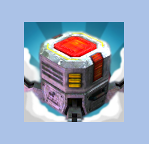
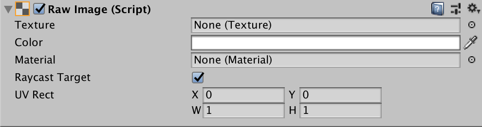

Raw Image 显示不带交互的图像，可用于装饰或图标，也能由脚本修改，以反映其他控件的变化。原文称它类似 Image，并提供图像动画和精确填充控件矩形的选项。Image 要求 Texture 是 Sprite；Raw Image 可以接受任何 Texture。

属性（Properties）

| 属性 | 功能说明 |
|---|---|
| 纹理（Texture） | 要显示的图像纹理。 |
| 颜色（Color） | 应用于图像的颜色。 |
| 材质（Material） | 用于渲染图像的 Material。 |
| 射线检测目标（Raycast Target） | 启用 Raycast Target 后，Unity 会将此图像视为射线检测目标。 |
| 射线检测边距（Raycast Padding） | 用于射线检测的 RectTransform 附加边距。 |
| 可被遮罩（Maskable） | 启用 Maskable，允许 Mask 隐藏该对象。参考：Masks |
| UV 矩形（UV Rect） | 使用归一化坐标（0.0～1.0）指定图像在控件矩形中的偏移和尺寸。边缘会拉伸以填充 UV 矩形周围的空间。 |
详细说明（Details）
Raw Image 不要求 Sprite 纹理，可显示 Unity Player 能使用的任意纹理。例如，原文使用 WWW 类从 URL 下载图像，或显示游戏对象上的纹理。
UV Rectangle 允许只显示大图像的一部分。X、Y 指定与控件左下角对齐的图像位置，例如 X=0.25 会裁掉最左侧四分之一。W、H 指定要缩放到控件矩形的区域宽高；W=H=0.5 会把图像四分之一的面积放大到控件范围。调整这些值即可缩放和放大图像，也可参阅 Scrollbar。
脚本说明与代码示例参阅 RawImage API reference。